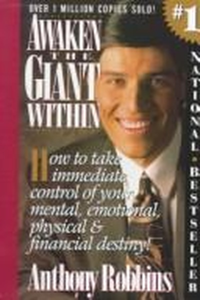

Library › Self-Improvement
Awaken the Giant Within — Summary & Key Lessons

How to take immediate control of your mental, emotional, physical and financial destiny.
📖 OPEN THE FULL INTERACTIVE BREAKDOWN →🌐 Read it in Hindi, Hinglish, Gujarati, Tamil & 22 more languages — free, with audio.
💡 The Big Idea
Robbins's core claim: between an event and your response sits your interpretation — the meaning you assign, driven by your beliefs, rules and focus. Change the meaning, change the emotion; change the emotion, change the action; change the action, change the life. Mastery is the ability to direct this chain deliberately instead of being its victim.
🧠 The 6 Key Lessons
Lesson 1: Decisions Shape Destiny — Make Them Now
Chapter 1: The Power of Decision
Robbins argues that a real decision — with commitment, not just intention — instantly changes your physiology, focus and actions. Most people 'try' and wait for motivation; deciders create motivation by choosing and then letting the choice organize their behavior. Decisions are the doorway to change.
📖 Example: People who 'decide' to get fit schedule the gym before they feel like it; people who 'want' to get fit wait to feel motivated. The difference between the two is not discipline but a moment of genuine decision, repeated daily. Read the full example →
⚡ Do this: Write one sentence beginning with 'I am committed to...' that names a decision you've been postponing. Say it out loud and schedule the first step.
Lesson 2: Meaning Is a Choice — Edit Your Interpretations
Chapter 2: The Science of Change
The same event can mean defeat or data depending on the meaning you assign. Robbins shows that painful experiences only control you through the interpretations you locked in years ago — interpretations you can re-edit. Assign empowering meanings: failure becomes feedback, rejection becomes redirection.
📖 Example: Two founders get the same rejection email. One thinks 'my product is worthless' and quits; the other thinks 'my pitch was unclear' and rewrites it. The event was identical; the meanings produced completely different trajectories. Read the full example →
⚡ Do this: Take your last setback and write three alternative meanings for it. Choose the one that empowers action and adopt it consciously.
Lesson 3: The Questions You Ask Run Your Brain
Chapter 3: The Power of Questions
Your brain is a question-answering machine: ask 'why does this always happen to me?' and it finds evidence of victimhood; ask 'what can I learn from this?' and it finds lessons. Robbins's tool: control your questions to control your state. Better questions are the fastest way to change a mood.
📖 Example: After a bad quarter, a manager who asks 'who's to blame?' gets defensive silence; one who asks 'what did we learn and what's our next move?' gets problem-solving. The team's energy follows the question, not the facts. Read the full example →
⚡ Do this: Write three questions you habitually ask yourself in tough moments and replace each with a more empowering version.
Lesson 4: Rules Determine Your Emotional Weather
Chapter 4: Rules and References
We all carry invisible rules: 'I'm successful only if I earn X' or 'I'm loved only if people call me'. When reality violates your rules, you suffer — even if the rules are absurd. Robbins says to rewrite your rules so that small wins count and happiness doesn't require perfection.
📖 Example: A person whose rule is 'a good day means no mistakes' will feel miserable daily, while one whose rule is 'a good day means one honest attempt' feels satisfaction constantly — identical days, opposite emotions, purely from the rules. Read the full example →
⚡ Do this: List your rules for success, love and a good day. Rewrite each so you can meet it today without miracles.
Lesson 5: Modeling: Steal the Pattern, Not Just the Result
Chapter 5: Modeling Excellence
Robbins built his career by modeling peak performers: not copying their outcomes but dissecting their beliefs, strategies and physiology. Anyone can replicate excellence when they extract the operating system instead of admiring the output. Success leaves clues — find someone who already does what you want and study their process.
📖 Example: Robbins studied athletes, speakers and entrepreneurs, breaking their success into states, questions and routines — then taught those patterns to millions. He didn't have their talent; he had their blueprint. Read the full example →
⚡ Do this: Pick one person whose results you want. Interview or study their daily process — beliefs, routines, questions — and install one piece this week.
Lesson 6: Massive Action Cures Most Fear
Chapter 6: The Power of Action
Fear lives in anticipation; action lives in the present. Robbins's prescription for stuck states is not more thinking but massive, imperfect action that floods your system with evidence of capability. Confidence is not the absence of fear but the accumulation of actions taken despite it.
📖 Example: Aspiring speakers who volunteer for every small talk build confidence through volume, not through reading about speaking. By the time the big stage arrives, their nervous system already knows 'I've done this before' — because they have, dozens of times. Read the full example →
⚡ Do this: Choose one fear and schedule ten small exposures to it this month. Track each one; let the evidence accumulate.
✅ 5-Step Action Plan
- Make one genuine decision today and schedule its first step
- Re-edit one painful interpretation into empowering meaning
- Replace three victim questions with empowering ones
- Rewrite your rules for a good day so today can qualify
- Install one piece of a model's process this week
⚠️ When This Doesn't Work
⚠️ When this doesn't work: 'Mindset fixes everything' is dangerously incomplete — no amount of reframing treats clinical depression, poverty, discrimination or burnout, and self-help intensity can become toxic positivity that invalidates real pain. Use these tools for motivation and resilience; pair them with professional help and structural change when needed.
💀 The Graveyard Proves It
🧠 Lumosity — $2M Fine for Selling Brain Training It Couldn't Prove. Burn: $2M FTC fine + $50M refunds; entire category discredited. Read the full case study →
💬 Best Quotes from Awaken the Giant Within
- “It is not the events of our lives that shape us, but our beliefs as to what those events mean.”
- “The quality of your life is the quality of your questions.”
- “Where focus goes, energy flows.”
Interactive version: mark lessons as read, listen in your language, share quote cards.